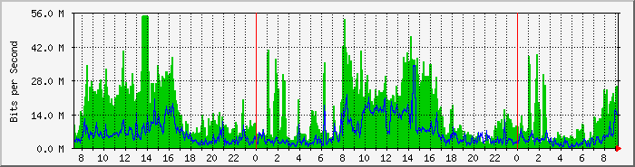
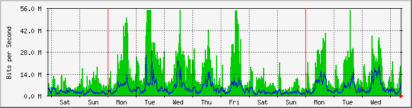
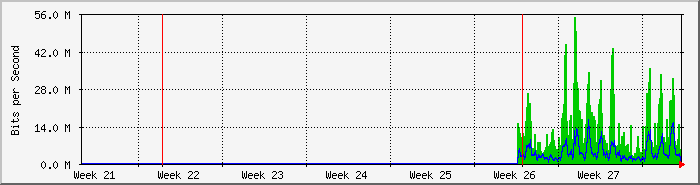
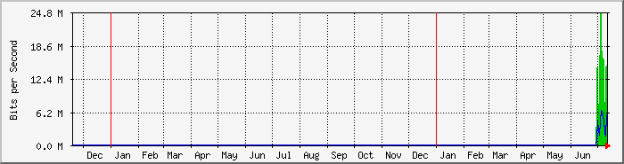

FortiGate100D WAN2 - Integra Fibra (50/50) - Central Corrientes
| Equipo: | Fortigate 100D ERSA Corrientes Central |
| Mantenido por: | redes@ersaurbano.com |
| Descripcion: | WAN2 |
| Tipo de puerta: | ethernetCsmacd (6) |
| Nombre de puerta: | wan2 |
| Max Speed: | 125.0 MBytes/s |
| Ip: | 181.14.247.42 (host42.181-14-247.telecom.net.ar) |
The statistics were last updated Thursday, 14 July 2022 at 9:16,
at which time 'ERSA-nodo2' had been up for 11 days, 22:32:32.
`Daily' Graph (5 Minute Average)

|
Max |
Average |
Current |
| In |
54.6 Mb/s (5.5%) |
15.3 Mb/s (1.5%) |
24.9 Mb/s (2.5%) |
| Out |
33.8 Mb/s (3.4%) |
5743.5 kb/s (0.6%) |
13.8 Mb/s (1.4%) |
`Weekly' Graph (30 Minute Average)

|
Max |
Average |
Current |
| In |
54.6 Mb/s (5.5%) |
13.4 Mb/s (1.3%) |
19.1 Mb/s (1.9%) |
| Out |
28.1 Mb/s (2.8%) |
4285.8 kb/s (0.4%) |
8555.6 kb/s (0.9%) |
`Monthly' Graph (2 Hour Average)

|
Max |
Average |
Current |
| In |
54.6 Mb/s (5.5%) |
13.5 Mb/s (1.3%) |
5278.1 kb/s (0.5%) |
| Out |
16.3 Mb/s (1.6%) |
4292.5 kb/s (0.4%) |
1671.9 kb/s (0.2%) |
`Yearly' Graph (1 Day Average)

|
Max |
Average |
Current |
| In |
24.5 Mb/s (2.4%) |
12.7 Mb/s (1.3%) |
14.8 Mb/s (1.5%) |
| Out |
6390.5 kb/s (0.6%) |
3916.2 kb/s (0.4%) |
4663.6 kb/s (0.5%) |
| GREEN ### |
Incoming Traffic in Bits per Second |
| BLUE ### |
Outgoing Traffic in Bits per Second |